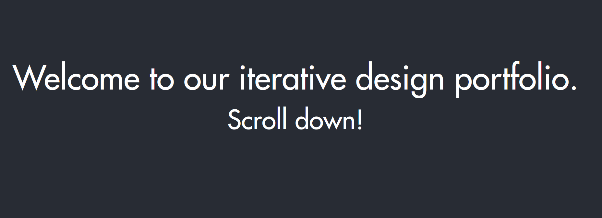

For this project, I and a team of other students designed an interface to fulfill a startup's mission.
Planning:
The rising startup
DimOrder brands itself as a "Toast for Southeast Asia." We liked the idea, so we wanted to help make an interface for the business. While the startup's mission was to provide a one-stop shop for restauranteurs to interact with both customers and suppliers, our group narrowed our approach to the point of sale system used by servers in the restaurant itself.
We felt that this app alone would give us enough freedom in design while not being forced to spread ourselves too thin. Furthermore, we designed the interface for a tablet, as it was a low-cost solution likely to be used in restaurants.
Prototypes:
Like in the
Redesign project, I made both lo-fi and hi-fi prototypes for the design. The lo-fi prototypes represented my original ideas before seeing the other group members' designs.
The hi-fi prototypes were done as a group. We decided on what screens and interactions our app would have and split it into sections that we individually "programmed" in Figma.
Iteration:
We attended a studio where we presented our app to an industry expert as well as our peers to get feedback on our design.
We also submitted our interactive Figma prototype to the site
usertesting.com along with a list of tasks to simulate what it would be like to actually use the app.
With these critiques in mind, we made improvements to the prototype like adding more information to screens and ways to undo like delete and back.
Final App:
My initial contributions that were included in the final app were the list view that displays a table's status at a glance; and the dropdown menu to add an item to an order. The Figma prototype is below:
Group Submission:
We submitted our design for peer critique as well as an email to the company explaining our mission. However, we did not elicit a response from the latter.
For more information about project as a whole, click on the image below, which will lead to the portfolio piece our group submitted as a whole. Note that this will navigate out of the portfolio.

Conclusion:
In this project, I learned to combine ideas and produce a larger project with a group of other designers. We were able to take visions that each of us had for the app and polish it into a product.
I also understood the importance of user testing and the feedback loop in perfecting a design, since what the designers had in mind might not match what the users experience.